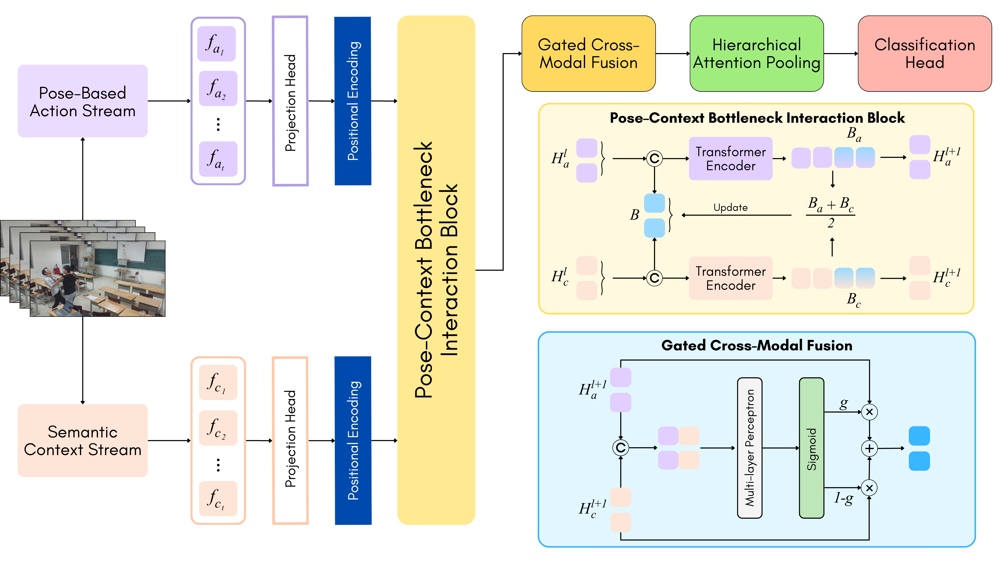

1 Faculty of Information Technology, Ho Chi Minh City University of Education, Vietnam
2 Faculty of Computer Science, University of Information Technology, Ho Chi Minh City, Vietnam
3 Vietnam National University, Ho Chi Minh City, Vietnam
School violence detection remains challenging due to complex human interactions, diverse surveillance conditions, and the lack of domain-specific datasets. This study introduces PCFormer, a dual-stream pose-context framework for video-based violence detection in educational settings. The pose-guided action stream extracts skeleton-based representations from sampled frames to emphasize human motion while suppressing irrelevant background information. In parallel, the semantic context stream captures global visual cues from RGB frames to provide complementary scene-level information. To integrate these complementary representations, PCFormer adopts a Multimodal Bottleneck Transformer, where learnable bottleneck tokens mediate compact and controlled interaction between pose-guided action features and contextual features. Gated cross-modal fusion and hierarchical attention pooling are then used to produce a video-level descriptor for binary violence classification. To support research in school-specific violence detection, we further introduce SAVE (School Aggression and Violence Evaluation), a dataset of 1,826 video clips recorded in classroom environments from multiple camera viewpoints. Experiments show that PCFormer achieves 93.06% accuracy on SAVE and strong performance on three public benchmarks: Hockey Fight (99.10%), Movies Fight (100.00%), and Crowd Violence (99.60%).

Figure 1. Overview of the PCFormer architecture. The model takes an input video, samples frames, and feeds them into two streams. The pose-guided action stream uses YOLOv11 Pose to extract skeletal features encoded by MobileNet-v3-Small. The semantic context stream uses a fine-tuned HARV Vision Transformer. The modalities interact via a Multimodal Bottleneck Transformer (MBT), where a shared set of learnable bottleneck tokens mediates cross-modal interaction to avoid quadratic cost. The representations are then merged using Gated Cross-Modal Fusion and summarized via Hierarchical Attention Pooling (HAP). Finally, a lightweight Classification Head predicts the violence probability.
Qualitative results of PCFormer on held-out validation videos. Each clip is processed end-to-end using the trained dual-stream model.
Performance comparison of baseline models on the SAVE dataset.
| Method | Accuracy (%) | Recall (%) | Precision (%) | F1-Score (%) |
|---|---|---|---|---|
| ViViT [36] | 66.67 | 35.68 | 95.65 | 51.97 |
| 3D CNN [18] | 73.22 | 80.54 | 70.62 | 75.25 |
| BrutNet [7] | 79.78 | 69.73 | 87.76 | 77.71 |
| SepConvLSTM [10] | 91.80 | 90.27 | 93.30 | 91.76 |
| PCFormer (Ours) ★ Best | 93.06 | 93.08 | 93.21 | 93.13 |
Performance comparison of studies and models on the Movies dataset.
| Study | Accuracy (%) | Recall (%) | Precision (%) | F1-Score (%) |
|---|---|---|---|---|
| Su et al., 2020 [19] | 98.50 | - | - | - |
| Islam et al., 2021 [10] | 100.00 | - | - | - |
| Hachiuma et al., 2023 [12] | 99.00 | - | - | - |
| Khan et al., 2024 [17] | 99.00 | - | - | 98.00 |
| Dündar et al., 2024 [18] | 100.00 | - | - | - |
| Tran et al., 2025 [9] | 100.00 | 100.00 | 100.00 | 100.00 |
| PCFormer (Ours) | 100.00 | 100.00 | 100.00 | 100.00 |
Performance comparison of studies and models on the Hockey Fight dataset.
| Study | Accuracy (%) | Recall (%) | Precision (%) | F1-Score (%) |
|---|---|---|---|---|
| Su et al., 2020 [19] | 96.80 | - | - | - |
| Islam et al., 2021 [10] | 99.50 | - | - | - |
| Hachiuma et al., 2023 [12] | 99.50 | - | - | - |
| Dündar et al., 2024 [18] | 95.50 | - | - | - |
| Khan et al., 2024 [17] | 98.50 | - | - | 98.00 |
| Tran et al., 2025 [9] | 90.43 | 91.54 | 92.61 | 92.02 |
| Khan et al., 2025 [20] | 97.20 | 95.10 | 95.10 | 95.10 |
| Negre et al., 2026 [37] | 97.00 | 98.00 | 95.00 | 97.00 |
| PCFormer (Ours) | 99.10 | 99.60 | 98.62 | 99.10 |
Performance comparison of studies and models on the Crowd Violence dataset.
| Study | Accuracy (%) | Recall (%) | Precision (%) | F1-Score (%) |
|---|---|---|---|---|
| Varghese et al., 2020 [38] | 92.90 | 92.00 | 93.00 | - |
| Su et al., 2020 [19] | 94.50 | - | - | - |
| Hachiuma et al., 2023 [12] | 94.70 | - | - | - |
| Khan et al., 2024 [17] | 97.00 | - | - | 96.00 |
| Negre et al., 2026 [37] | 90.00 | 97.00 | 86.00 | 91.00 |
| PCFormer (Ours) | 99.60 | 99.20 | 100.00 | 99.59 |
Quantitative comparison of the proposed dual-stream approach against single-stream baselines.
| Stream mode | Acc. | Pre. | Re. | F1 |
|---|---|---|---|---|
| RGB | 0.8913 ± 0.0053 | 0.8922 ± 0.0253 | 0.8941 ± 0.0218 | 0.8926 ± 0.0026 |
| Motion | 0.9126 ± 0.0100 | 0.9279 ± 0.0185 | 0.8973 ± 0.0251 | 0.9120 ± 0.0108 |
| Dual (proposed) | 0.9306 ± 0.0037 | 0.9321 ± 0.0114 | 0.9308 ± 0.0150 | 0.9313 ± 0.0040 |
Ablation study evaluating the effectiveness of the proposed MBT architecture.
| Interaction mode | Acc. | Pre. | Re. | F1 |
|---|---|---|---|---|
| Vanilla cross attention | 0.9142 ± 0.0168 | 0.9236 ± 0.0365 | 0.9070 ± 0.0269 | 0.9146 ± 0.0156 |
| W/o cross attention | 0.9142 ± 0.0153 | 0.9199 ± 0.0246 | 0.9103 ± 0.0228 | 0.9147 ± 0.0150 |
| MBT (proposed) | 0.9306 ± 0.0037 | 0.9321 ± 0.0114 | 0.9308 ± 0.0150 | 0.9313 ± 0.0040 |
Ablation study on the effect of different fusion modes.
| Fusion mode | Acc. | Pre. | Re. | F1 |
|---|---|---|---|---|
| Add | 0.9153 ± 0.0171 | 0.9295 ± 0.0307 | 0.9016 ± 0.0164 | 0.9151 ± 0.0166 |
| Multiply | 0.9137 ± 0.0105 | 0.9290 ± 0.0207 | 0.8984 ± 0.0181 | 0.9132 ± 0.0104 |
| Concat | 0.9137 ± 0.0235 | 0.9234 ± 0.0473 | 0.9081 ± 0.0520 | 0.9139 ± 0.0236 |
| Gated (proposed) | 0.9306 ± 0.0037 | 0.9321 ± 0.0114 | 0.9308 ± 0.0150 | 0.9313 ± 0.0040 |
Ablation study on the effect of different pooling modes.
| Pooling mode | Acc. | Pre. | Re. | F1 |
|---|---|---|---|---|
| GAP | 0.8978 ± 0.0063 | 0.8969 ± 0.0215 | 0.9027 ± 0.0320 | 0.8992 ± 0.0077 |
| Max | 0.9164 ± 0.0252 | 0.9138 ± 0.0308 | 0.9222 ± 0.0258 | 0.9178 ± 0.0244 |
| Hierarchical (proposed) | 0.9306 ± 0.0037 | 0.9321 ± 0.0114 | 0.9308 ± 0.0150 | 0.9313 ± 0.0040 |
Ablation study on the impact of the number of bottleneck tokens.
| Token | Acc. | Pre. | Re. | F1 |
|---|---|---|---|---|
| 2 | 0.9230 ± 0.0099 | 0.9255 ± 0.0306 | 0.9232 ± 0.0204 | 0.9238 ± 0.0085 |
| 4 | 0.9306 ± 0.0037 | 0.9321 ± 0.0114 | 0.9308 ± 0.0150 | 0.9313 ± 0.0040 |
| 6 | 0.9120 ± 0.0053 | 0.9517 ± 0.0083 | 0.8703 ± 0.0183 | 0.9090 ± 0.0066 |
| 8 | 0.9000 ± 0.0079 | 0.9449 ± 0.0263 | 0.8530 ± 0.0266 | 0.8960 ± 0.0084 |